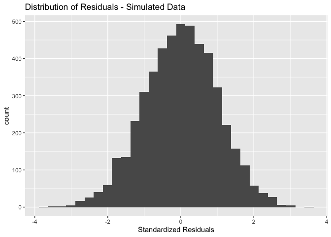
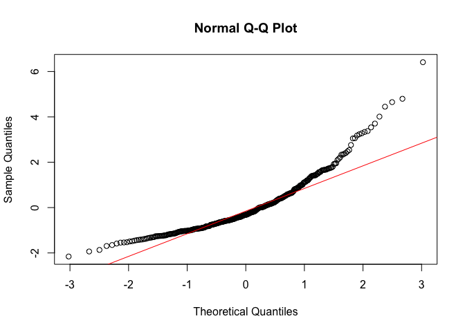
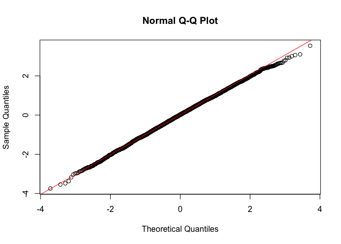
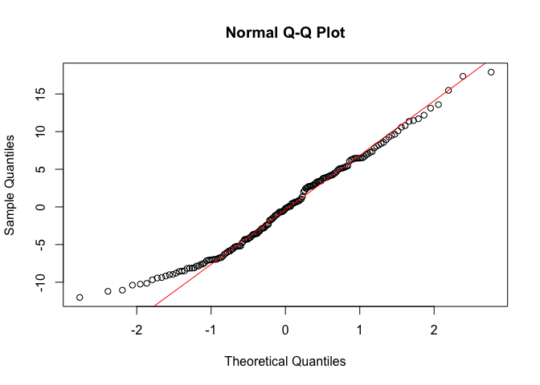
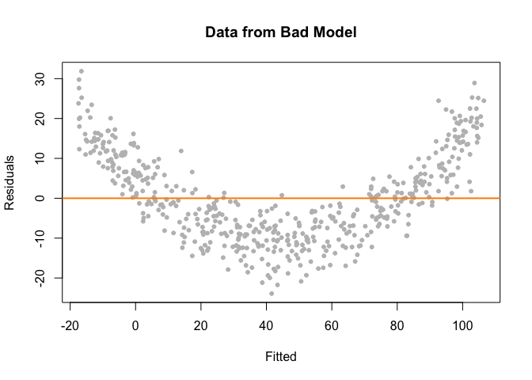

We’re in the second leg of our journey into linear regression. In this lab, we go through the R functions for running regression diagnostics and multiple linear regression. The objectives of this lab are as follows
To help us accomplish these learning objectives, we will continue examining the association between neighborhood characteristics and COVID-19 case rates in New York City. We’ll be following BBR chapters 12 and 13.
We’ll be using a couple of new packages in this lab. First, you’ll need to install them. The code checks if you’ve already installed these packages before. If you haven’t, it will install them.
if (!require("GGally")) install.packages("GGally")
if (!require("standardize")) install.packages("standardize")
if (!require("lmtest")) install.packages("lmtest")Load these packages and others we will need for this lab.
library(MASS)
library(tidyverse)
library(GGally)
library(gridExtra)
library(car)
library(standardize)
library(lmtest)
library(sf)
We will bring in a shape file containing COVID-19 cases per 1,000 residents and demographic and socioeconomic characteristics for New York city zip codes. I zipped up the file and uploaded it onto Github. Set your working directory to an appropriate folder and use the following code to download and unzip the file. I also uploaded the file in Canvas in the Lab and Assignments Week 6 folder.
#insert the pathway to the folder you want your data stored into
setwd("insert your pathway here")
#downloads file into your working directory
download.file(url = "https://raw.githubusercontent.com/geo200cn/data/master/zctanyccovidwk6.zip", destfile = "zctanyccovidwk6.zip")
#unzips the zipped file
unzip(zipfile = "zctanyccovidwk6.zip")Bring in the New York City zip code shape file into R using st_read()
zctanyc <- st_read("zctanyccovidwk6.shp")COVID-19 case data were downloaded from the NYC Department of Health and Mental Hygiene (confirmed cases up through May 1, 2020). Socioeconomic and demographic data were downloaded from the 2014-2018 American Community Survey. A record layout of the data can be found here. Our research question in this guide is: What ecological characteristics are associated with zip code COVID-19 case rates in New York City?
In the last lab guide, we ran a simple regression model using ordinary least squares (OLS) to estimate the relationship between COVID-19 cases per 1,000 residents and percent black at the zip code level. Let’s run this model using lm() and save its results in an object named lm1. Our dependent variable is covidrate and the independent variable is pblk.
#eliminate scientific notation
options(scipen=999)
lm1 <- lm(covidrate ~ pblk, data = zctanyc)We asked you in last lab guide to interpret the coefficients in terms of how they characterize the relationship between the dependent and independent variables. We did not ask you, however, to make any statistical inferences regarding the significance of the coefficients (e.g. is the coefficient statistically significant from 0). After reading BBR Ch. 12, we now have the tools to make these inferences. Let’s get a summary of our regression results
summary(lm1)##
## Call:
## lm(formula = covidrate ~ pblk, data = zctanyc)
##
## Residuals:
## Min 1Q Median 3Q Max
## -12.0235 -5.2758 -0.1771 4.4919 17.8935
##
## Coefficients:
## Estimate Std. Error t value Pr(>|t|)
## (Intercept) 15.58486 0.63189 24.664 < 0.0000000000000002 ***
## pblk 0.09636 0.02044 4.714 0.00000493 ***
## ---
## Signif. codes: 0 '***' 0.001 '**' 0.01 '*' 0.05 '.' 0.1 ' ' 1
##
## Residual standard error: 6.464 on 175 degrees of freedom
## Multiple R-squared: 0.1127, Adjusted R-squared: 0.1076
## F-statistic: 22.23 on 1 and 175 DF, p-value: 0.000004929What is this output showing?
BBR Ch. 12 outlines the core assumptions that need to be met in order to obtain unbiased regression estimates from an OLS model. BBR Ch. 12.4 goes through several diagnostic tools for examining whether an OLS model breaks these assumptions. In this section, we will go through how to run these diagnostics in R.
Let’s also create a fake dataset that meets the OLS assumptions to act as a point of comparison along the way. We’ll call this the goodreg model.
set.seed(08544)
x <-rnorm(5000, mean = 7, sd = 1.56)# just some normally distributed data
## We're establishing here a linear relationship,
## What's this "true" linear relationship we're setting up?
## So that y = 12 - .4x + some normally distributed error values
y <- 12 - 0.4*x +rnorm(5000, mean = 0, sd = 1)
goodreg <- lm(y ~ x)
summary(goodreg)##
## Call:
## lm(formula = y ~ x)
##
## Residuals:
## Min 1Q Median 3Q Max
## -3.7188 -0.6658 0.0158 0.6944 3.5102
##
## Coefficients:
## Estimate Std. Error t value Pr(>|t|)
## (Intercept) 12.033221 0.064450 186.71 <0.0000000000000002 ***
## x -0.402152 0.008986 -44.75 <0.0000000000000002 ***
## ---
## Signif. codes: 0 '***' 0.001 '**' 0.01 '*' 0.05 '.' 0.1 ' ' 1
##
## Residual standard error: 0.9932 on 4998 degrees of freedom
## Multiple R-squared: 0.2861, Adjusted R-squared: 0.2859
## F-statistic: 2003 on 1 and 4998 DF, p-value: < 0.00000000000000022To be clear, we know the exact functional form of this model, all OLS assumptions should be met, and therefore this model should pass all diagnostics.
The first graphical diagnostic tool that BBR recommends is a histogram of residuals. The histogram will test Assumption 4, errors are normally distributed. We can extract the residuals from an lm object using the function resid(). We will need to use the residuals for other diagnostics, so let’s save them into the zctanyc data frame under the variable resid using the mutate() function.
zctanyc <- mutate(zctanyc, resid = resid(lm1))The order of the tracts inresid(lm1) is the same as the order of the tracts in zctanyc and that’s why we were able to directly column bind it like we did in the above code rather than doing a left_join().
Now, we create a histogram of residuals using our best bud ggplot()
ggplot(zctanyc) + geom_histogram(mapping = (aes(x=resid))) + xlab("Absolute Residuals")
We’re trying to see if its shape is that of a normal distribution (bell curve). This is a histogram of absolute residuals. To get a histogram of standardized residuals like the one shown in Fig 12-12 (b) on page 489 in BBR, use the function stdres(), where the main argument is our model results lm1
ggplot(zctanyc) + geom_histogram((aes(x=stdres(lm1)))) + xlab("Standardized Residuals")
For comparison, the following is what the residuals from our simulated good data look like
ggplot() + geom_histogram(aes(x = stdres(goodreg))) +
xlab("Standardized Residuals") +
ggtitle("Distribution of Residuals - Simulated Data")
BBR next suggests a normal probability plot, also known as a Q-Q plot, to check error normality. Use the function qqnorm() and just plug in the model residuals. The function qqline() adds the line for what normally distributed data should theoretically follow.
qqnorm(zctanyc$resid)
qqline(zctanyc$resid,col="red")
In short, if the points of the plot do not closely follow a straight line, this would suggest that the data do not come from a normal distribution. What does the Q-Q plot look like for our good model?
qqnorm(stdres(goodreg))
qqline(stdres(goodreg),col="red")Question 1: What do you conclude by visually examining the histogram and Q-Q plot of the lm1 residuals?
Histograms and Q-Q plots give a nice visual presentation of the residual distribution, however if we are interested in formal hypothesis testing, there are a number of options available. A commonly used test is the Shapiro–Wilk test, which is implemented in R using the function shapiro.test(). The null is that the data are normally distributed. Our good model goodreg should not reject the null
shapiro.test(resid(goodreg))##
## Shapiro-Wilk normality test
##
## data: resid(goodreg)
## W = 0.9994, p-value = 0.1026What about our simple linear regression model?
shapiro.test(resid(lm1))##
## Shapiro-Wilk normality test
##
## data: resid(lm1)
## W = 0.97764, p-value = 0.006004
BBR on page 490-492 suggests a plot of the residuals against the fitted values to test assumptions 1-4. In particular, the plot will is useful for checking both the linearity and homoscedasticity assumptions. We should look for two things in this plot.
Question 2: Create a residual against fitted value plot as described by BBR for the lm1 model. Do the same for the goodreg model. What do you conclude from these plots?
We know what diagnostic plots should like when we have good data. But what about for bad data? Below is an example of some bad data that breaks the linearity assumption. Don’t worry too much about the intricacies of the code - were just trying creating simulated data that is deliberately not normal so you can see what nonlinearity looks like in the context of the diagnostic tools we’ve been running.
set.seed(42)
sim_3 = function(sample_size = 500) {
x = runif(n = sample_size) * 5
y = 3 + 5 * x ^ 2 + rnorm(n = sample_size, mean = 0, sd = 5)
data.frame(x, y)
}
sim_data_3 = sim_3()
badreg = lm(y ~ x, data = sim_data_3)Here is the residual vs fitted values plot for badreg
plot(fitted(badreg), resid(badreg), col = "grey", pch = 20,
xlab = "Fitted", ylab = "Residuals", main = "Data from Bad Model")
abline(h = 0, col = "darkorange", lwd = 2)
BBR’s final diagnostic tool is a plot of the residuals against omitted variables (page 492-494). The utility of this tool is to determine if omitted variable bias is present. It can also test for linearity and constant variance. The residuals are on the y-axis and the omitted variable is on the x-axis.
Question 3: Create residual against omitted variable plots for medincome and one more numeric variable not already included in the model lm1. What do you conclude from these plots?
A simple linear regression is, well, too simple. You’ll want to add more variables in your model to
Reason (3) is particularly important for avoiding violations of the OLS assumptions. Let’s go through this reason first to help motivate why to include more than one variable in the model.
The most common reason why your model is breaking OLS assumptions is because you’ve failed to include a variable that is confounding the relationship between your primary independent variable(s) and the outcome. Here, we are interested in examining the impact of a variable X on the outcome Y controlling for the impact of another variable Z. In other words, we don’t really care about the effect of Z, but simply want to control for it so we can get an unbiased estimate of the effect of X. In this case, Z is a confounding variable. Let’s try to make clear what we mean by confounding. Here are three ways to define a confounding variable, all saying the same thing, but in different ways.
Confounding variables or confounders are often defined as variables that correlate (positively or negatively) with both the dependent variable and the independent variable
A confounder is an extraneous variable whose presence affects the variables being studied so that the results do not reflect the actual relationship between the variables under study.
A third variable, not the dependent (outcome) or main independent(exposure) variable of interest, that distorts the observed relationship between the exposure and outcome.
Confounding can have serious consequences on your results. For example, consider the COVID-19 case rate in Florida, which is much higher than in Michigan. Before concluding that Florida is a riskier place to live, one needs to consider confounding factors such as age. Florida has a higher proportion of people of retirement age and older than does Michigan, and older people are at higher risk of getting COVID-19. Therefore, one must “adjust” or control for age before drawing any conclusions about the influence of some other variable on COVID-19 case rates.
Going back to our case study of New York City let’s say we ran a simple linear regression of COVID-19 rates on percent unemployment
summary(lm(covidrate ~ punemp, data = zctanyc))##
## Call:
## lm(formula = covidrate ~ punemp, data = zctanyc)
##
## Residuals:
## Min 1Q Median 3Q Max
## -11.970 -5.625 -0.926 4.463 17.840
##
## Coefficients:
## Estimate Std. Error t value Pr(>|t|)
## (Intercept) 12.8605 1.2641 10.174 < 0.0000000000000002 ***
## punemp 0.8267 0.2078 3.978 0.000101 ***
## ---
## Signif. codes: 0 '***' 0.001 '**' 0.01 '*' 0.05 '.' 0.1 ' ' 1
##
## Residual standard error: 6.571 on 175 degrees of freedom
## Multiple R-squared: 0.08294, Adjusted R-squared: 0.0777
## F-statistic: 15.83 on 1 and 175 DF, p-value: 0.0001015We would conclude that a one percentage point increase in percent unemployment in a neighborhood is associated with an increase of 0.827 COVID-19 cases per 1,000 residents. The results also show that the coefficient has a p-value of 0.000101, which indicates that the punemp coefficient is statistically significant at the 0.001 level. This means that the probability that the association between punemp and covidrate is due to chance is less than 100*0.001 = 0.1 percent. In other words, the probability of seeing the association 0.8267 just by chance if the null hypothesis is true is 0.1 percent.
But, when you include percent black, you get
summary(lm(covidrate ~ pblk + punemp, data = zctanyc))##
## Call:
## lm(formula = covidrate ~ pblk + punemp, data = zctanyc)
##
## Residuals:
## Min 1Q Median 3Q Max
## -11.5354 -5.0580 -0.7489 4.3570 17.7511
##
## Coefficients:
## Estimate Std. Error t value Pr(>|t|)
## (Intercept) 13.69444 1.26782 10.802 <0.0000000000000002 ***
## pblk 0.07294 0.02448 2.980 0.0033 **
## punemp 0.42024 0.24478 1.717 0.0878 .
## ---
## Signif. codes: 0 '***' 0.001 '**' 0.01 '*' 0.05 '.' 0.1 ' ' 1
##
## Residual standard error: 6.428 on 174 degrees of freedom
## Multiple R-squared: 0.1275, Adjusted R-squared: 0.1174
## F-statistic: 12.71 on 2 and 174 DF, p-value: 0.000007044And just like that, gone.
Question 4: In your own words, explain why the statistically significant relationship between percent unemployment and COVID-19 rates disappeared when we included percent black.
This example illustrates the importance of accounting for potential confounding in your model. This includes confounding introduced by spatial dependency or autocorrelation, which we will discuss in the next guide.
Including more variables mitigates confounding. We also might be substantively interested in understanding the relationship between COVID-19 rates and other variables besides percent black. Let’s beef up our regression model by including percent Hispanic, percent 65 year old and over, median household income, and total population as independent variables.
lm2 <- lm(covidrate ~ pblk + phisp + medincome +totp + p65old, data = zctanyc)And summarize
summary(lm2)##
## Call:
## lm(formula = covidrate ~ pblk + phisp + medincome + totp + p65old,
## data = zctanyc)
##
## Residuals:
## Min 1Q Median 3Q Max
## -10.5625 -4.2955 -0.8762 3.7455 15.4670
##
## Coefficients:
## Estimate Std. Error t value Pr(>|t|)
## (Intercept) 12.57451167 3.21496495 3.911 0.000132 ***
## pblk 0.09056056 0.02013347 4.498 0.0000126 ***
## phisp 0.12825817 0.03007490 4.265 0.0000331 ***
## medincome -0.00004588 0.00001737 -2.642 0.009012 **
## totp -0.00004357 0.00001757 -2.480 0.014097 *
## p65old 0.36634418 0.09276337 3.949 0.000114 ***
## ---
## Signif. codes: 0 '***' 0.001 '**' 0.01 '*' 0.05 '.' 0.1 ' ' 1
##
## Residual standard error: 5.48 on 171 degrees of freedom
## Multiple R-squared: 0.3767, Adjusted R-squared: 0.3585
## F-statistic: 20.67 on 5 and 171 DF, p-value: 0.0000000000000004017Question 5: What is the interpretation of the intercept?
Question 6: What is the interpretation of the coefficient value for the pblk variable? Include in your interpretation a statement regarding the statistical significance of the coefficient.
You might be tempted to say that p65old has the most dramatic effect on COVID-19 rates because the absolute value of its coefficient is the largest and it is statistically significant at the 0.001 level (i.e. the magnitude of the effect is the largest and the probability that this effect is due to chance is very small). But, the variable scales are not the same. For example, p65old is in percent whereas medincome is in dollars. As outlined in BBR page 505, you can obtain standardized regression coefficients to make comparisons regarding effect sizes. One way to do this is to use the function standardize(), which is a part of the standardize package.
Insert the same exact regression formula and data argument used to create lm2 inside the standardize() function. Make sure to save it to an object.
zctanycstd <- standardize(covidrate ~ pblk + phisp + medincome +totp + p65old, data = zctanyc)You get an object of class standardized. This object contains the standardized values for all of the variables in your model.
class(zctanycstd)## [1] "standardized"Plug the object’s data zctanycstd$data into the lm() function
lm3 <- lm(covidrate ~ pblk + phisp + medincome +totp + p65old, data = zctanycstd$data)And summarize
summary(lm3)##
## Call:
## lm(formula = covidrate ~ pblk + phisp + medincome + totp + p65old,
## data = zctanycstd$data)
##
## Residuals:
## Min 1Q Median 3Q Max
## -1.5437 -0.6278 -0.1280 0.5474 2.2605
##
## Coefficients:
## Estimate Std. Error t value Pr(>|t|)
## (Intercept) -0.00000000000000007238 0.06020090504594896585 0.000 1.000000
## pblk 0.31549674005828370893 0.07014141495741302301 4.498 0.0000126
## phisp 0.36508323439634066121 0.08560733328960749844 4.265 0.0000331
## medincome -0.24499765787620594870 0.09274025013144404639 -2.642 0.009012
## totp -0.16999844205348582649 0.06854135112997390700 -2.480 0.014097
## p65old 0.26995857538764173045 0.06835721360849304762 3.949 0.000114
##
## (Intercept)
## pblk ***
## phisp ***
## medincome **
## totp *
## p65old ***
## ---
## Signif. codes: 0 '***' 0.001 '**' 0.01 '*' 0.05 '.' 0.1 ' ' 1
##
## Residual standard error: 0.8009 on 171 degrees of freedom
## Multiple R-squared: 0.3767, Adjusted R-squared: 0.3585
## F-statistic: 20.67 on 5 and 171 DF, p-value: 0.0000000000000004017Question 7: What is the interpretation of the coefficient value for p65old?
You can also use the non standardized model coefficient values from lm2 and plug them into BBR equation 13-6 on page 505
b <- summary(lm2)$coef[2:6, 1]
sy <- apply(lm2$model[1], 2, sd)
sx <- apply(lm2$model[2:6], 2, sd)
betas <- b * (sx/sy)
betas## pblk phisp medincome totp p65old
## 0.3154967 0.3650832 -0.2449977 -0.1699984 0.2699586
It might seem that if confounding is such a big problem (and it is when trying to make causal inferences) you should aim to try to control for everything. Including the kitchen sink. The downside of this strategy is that including too many variables will likely introduce multicollinearity in your model. Multicollinearity is defined to be high, but not perfect, correlation between two independent variables in a regression.
What are the effects of multicollinearity? Mainly you will get blown up standard errors for the coefficient on one of your correlated variables. In other words, you will not detect a relationship even if one does exist because the standard error on the coefficient is artificially inflated.
What to do? First, run a correlation matrix for all your proposed independent variables. We did that with ggpairs(), but another way of doing it is to use the cor() function as such. This function doesn’t work with sf objects, so we convert zctanyc to a regular data frame using the st_drop_geometry() function. We use the function select() to keep the variables we need from zctanyc. We use the round() function to round up the correlation values to two significant digits after the decimal point.
round(cor(dplyr::select(st_drop_geometry(zctanyc), pblk, phisp, medincome, totp, p65old)),2)## pblk phisp medincome totp p65old
## pblk 1.00 -0.01 -0.36 0.17 -0.13
## phisp -0.01 1.00 -0.57 0.28 -0.33
## medincome -0.36 -0.57 1.00 -0.47 0.01
## totp 0.17 0.28 -0.47 1.00 -0.08
## p65old -0.13 -0.33 0.01 -0.08 1.00Any correlation that is high is worth flagging. In this case, we see a few pairwise correlations greater than 0.5 that might be worth keeping in mind.
You can also run your regression and then detect multicollinearity in your results. Signs of multicollinearity include
A formal and likely the most common indicator of multicollinearity is the Variance Inflation Factor (VIF). Use the function vif() in the car package to get the VIFs for each variable. Let’s check the VIFs for the lm2 model
vif(lm2)## pblk phisp medincome totp p65old
## 1.349840 2.010737 2.359771 1.288958 1.282041A large VIF indicates a troublesome variable. What is a large VIF? There are many rules of thumbs out there in terms of what counts for an alarmingly high VIF. The most common is greater than 5. If a VIF is greater than 5, flag it. So, what should you do next?
You’re done! Woohoo!
Website created and maintained by Noli Brazil